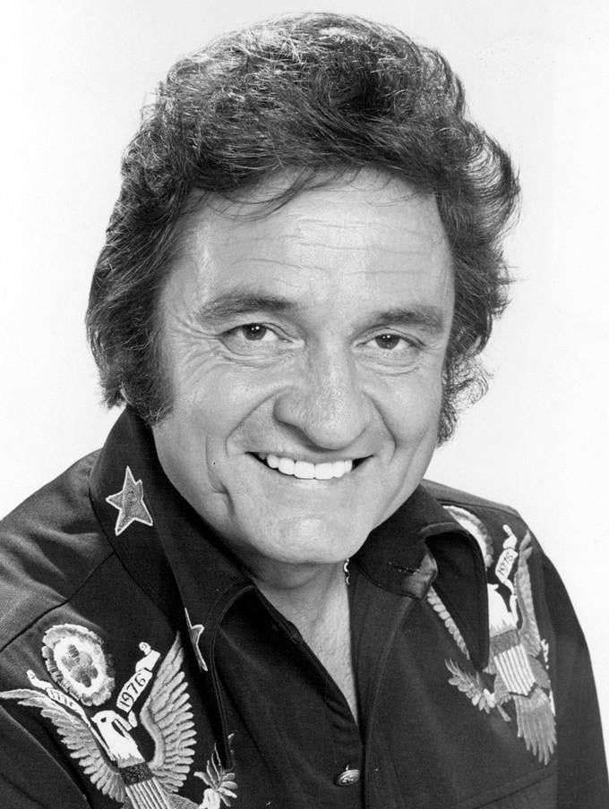

Friends in Low Places
Garth Brooks
4:18 • Classic • Country BalladCrazy
Patsy Cline
2:45 • Heartfelt • Classic Country
Take Me Home, Country Roads
John Denver
3:10 • Nostalgic • Folk CountryJolene
Dolly Parton
2:42 • Iconic • Female Vocal

Ring of Fire
Johnny Cash
2:38 • Bold • Country RockMan! I Feel Like A Woman!
Shania Twain
3:53 • Upbeat • Country Pop